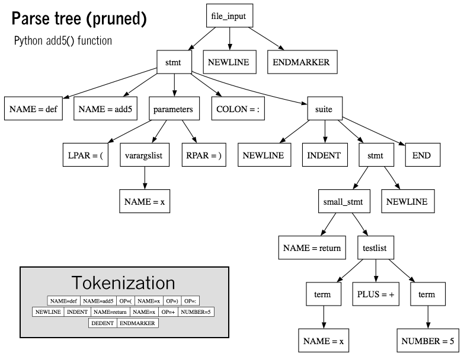

A programming language is a formal language comprising a set of instructions that produce various kinds of output. Programming languages are used in computer programming to implement algorithms.
Most programming languages consist of instructions for computers. There are programmable machines that use a set of specific instructions, rather than general programming languages. Since the early 1800s, programs have been used to direct the behavior of machines such as Jacquard looms, music boxes and player pianos.The programs for these machines (such as a player piano's scrolls) did not produce different behavior in response to different inputs or conditions.
Thousands of different programming languages have been created, and more are being created every year. Many programming languages are written in an imperative form (i.e., as a sequence of operations to perform) while other languages use the declarative form (i.e. the desired result is specified, not how to achieve it).
The description of a programming language is usually split into the two components of syntax (form) and semantics (meaning). Some languages are defined by a specification document (for example, the C programming language is specified by an ISO Standard) while other languages (such as Perl) have a dominant implementation that is treated as a reference. Some languages have both, with the basic language defined by a standard and extensions taken from the dominant implementation being common.
Syntax
Syntax highlighting is often used to aid programmers in recognizing elements of source code. The language above is Python.
A programming language's surface form is known as its syntax. Most programming languages are purely textual; they use sequences of text including words, numbers, and punctuation, much like written natural languages. On the other hand, there are some programming languages which are more graphical in nature, using visual relationships between symbols to specify a program.
The syntax of a language describes the possible combinations of symbols that form a syntactically correct program. The meaning given to a combination of symbols is handled by semantics (either formal or hard-coded in a reference implementation). Since most languages are textual, this article discusses textual syntax.
Programming language syntax is usually defined using a combination of regular expressions (for lexical structure) and Backus–Naur form (for grammatical structure). Below is a simple grammar, based on Lisp:
expression ::= atom | list
atom ::= number | symbol
number ::= [+-]?['0'-'9']+
symbol ::= ['A'-'Z''a'-'z'].*
list ::= '(' expression* ')'
 Thousands of different programming languages have been created, and more are being created every year. Many programming languages are written in an imperative form (i.e., as a sequence of operations to perform) while other languages use the declarative form (i.e. the desired result is specified, not how to achieve it).
Thousands of different programming languages have been created, and more are being created every year. Many programming languages are written in an imperative form (i.e., as a sequence of operations to perform) while other languages use the declarative form (i.e. the desired result is specified, not how to achieve it).